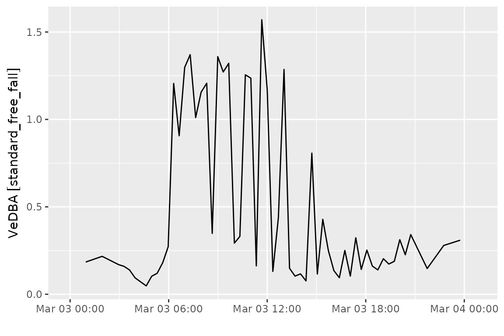
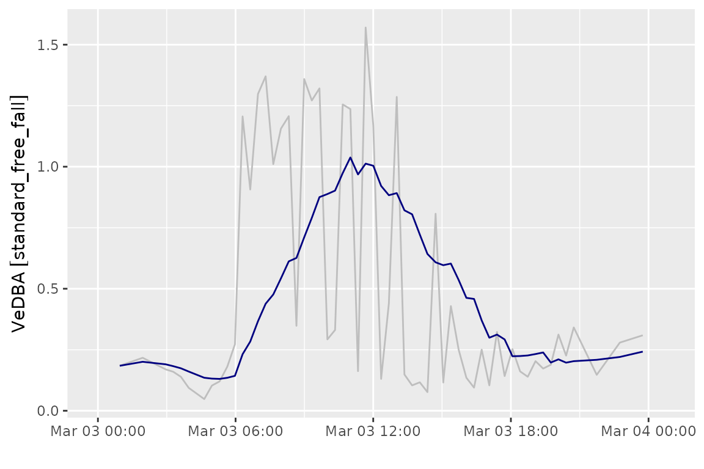
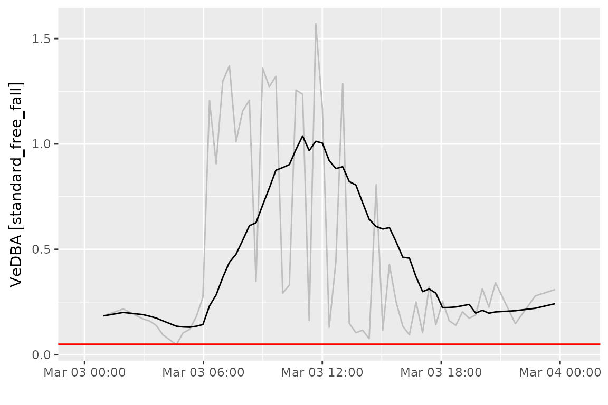
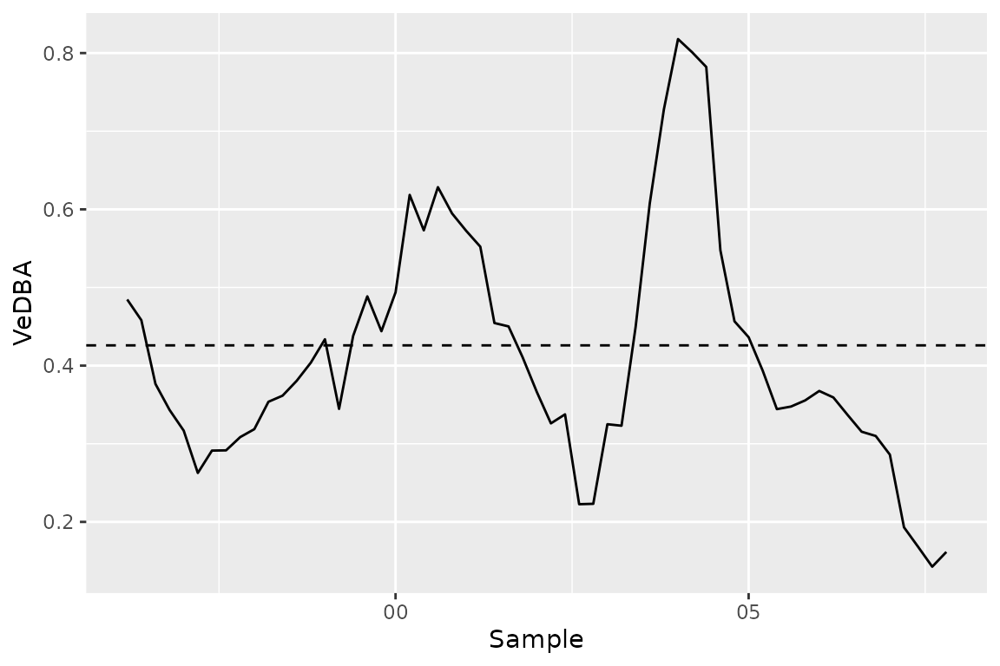

After extracting IMU data into a vector of bursts, we typically will
want to summarize the individual burst samples into a more interpretable
measure of activity. This vignette shows how to extract simple activity
metrics from acc bursts and reattach these metrics to
corresponding location data collected with GPS.
We’ll use the move2imu gulls data for this demo:
gul <- gulls()And then extract our acceleration bursts:
gul$acceleration <- as_acc(gul)
gul$acceleration[1:10]
#> <acceleration[10]>
#> [1] <NA> (-97.75 323.55 1963.95) <NA>
#> [4] <NA> <NA> <NA>
#> [7] <NA> <NA> <NA>
#> [10] <NA>
#> # frequency: 20 [Hz]Dynamic body acceleration
As a simple example, imagine if we wanted to compute the vectorial dynamic body acceleration (VeDBA) for these bursts, and link each of those VeDBA values to the closest GPS location record.
VeDBA is computed by:
- subtracting the per-axis mean of a burst (the static, gravity-driven component) from each sample, leaving the dynamic component, and
- taking the mean Euclidean norm of the dynamic component across samples.
First, we need to convert our raw acceleration values into physical units. (This is covered in depth in the calibration vignette.) We will use the standard transformation for Ornitela tags here (TODO: what tags are used here?)
gul$acceleration <- transform_imu(
gul$acceleration,
acc_calibration("ornitela", units = "standard_free_fall")
)We can write a custom function that ingests an acceleration vector and computes VeDBA on each burst:
vedba <- function(acc) {
purrr::map_dbl(
bursts(acc),
function(b) {
# If no data, return NA
if (rlang::is_null(b)) {
return(NA_real_)
}
b <- drop_units(b)
dba <- t(b) - colMeans(b)
mean(sqrt(colSums(dba^2)))
}
)
}We can then apply this function to each element of our acceleration vector. First, we confirm that we have a standard unit for all bursts. That way, we can safely reattach that unit after computation:
# Confirm that we have a single standard unit across all bursts:
unique(imu_units(gul$acceleration[!is.na(gul$acceleration)]))
#> [1] "standard_free_fall"Now we can compute VeDBA for all bursts:
v <- set_units(vedba(gul$acceleration), "standard_free_fall")
head(v)
#> Units: [standard_free_fall]
#> [1] NA 0.1843255 NA NA NA NAWe can put these values directly into our dataframe alongside the other event data for that record:
library(ggplot2)
ggplot() +
geom_line(data = gul_v, aes(x = mt_time(gul_v), y = vedba)) +
labs(x = "", y = "VeDBA") +
scale_x_datetime(expand = expansion(mult = 0.1))
If we’re interested in how these changes are expressed in space, we
need to reattach the computed VeDBA to the recorded GPS locations for
our gull. However, the acceleration data is not directly linked with a
particular location. We can see that these records are associated with
POINT EMPTY geometries:
gul_v$geometry
#> Geometry set for 59 features (with 59 geometries empty)
#> Geometry type: POINT
#> Dimension: XY
#> Bounding box: xmin: NA ymin: NA xmax: NA ymax: NA
#> Geodetic CRS: WGS 84
#> First 5 geometries:
#> POINT EMPTY
#> POINT EMPTY
#> POINT EMPTY
#> POINT EMPTY
#> POINT EMPTYThe tag did record locations, though—it’s simply that these records are stored in the GPS rows of the input move2 object, not the acceleration rows. So, we need to relink our VeDBA values with the corresponding GPS location at the same timestamp. First, we’ll drop the empty geometry column from our VeDBA data and restrict our location data just to those records with spatial information:
# Drop geometry column, which is empty for our acc records:
gul_v <- sf::st_drop_geometry(gul_v)
# Extract location records
gul_gps <- gul[!sf::st_is_empty(gul), ]Then, we can use dplyr::left_join() to reattach the two,
linking by the track ID and the timestamp. (We use the move2 helpers
mt_track_id_column() and mt_time_column() to
ensure the correct metadata columns are used for the join, as the
precise names of these columns can differ across data sources.)
# Specify that the track ID columns and timestamp columns should match,
# regardless of the exact column names:
join <- setNames(
c(mt_track_id_column(gul_v), mt_time_column(gul_v)),
c(mt_track_id_column(gul_gps), mt_time_column(gul_gps))
)
join
#> individual_local_identifier timestamp
#> "individual_local_identifier" "timestamp"
gul_joined <- left_join(gul_gps, gul_v, by = join)Now we have our VeDBA values associated with their corresponding GPS location:
library(leaflet)
pal <- colorNumeric("viridis", as.numeric(gul_joined$vedba))
leaflet() |>
addProviderTiles("CartoDB.Positron") |>
addPolylines(
data = mt_track_lines(gul_joined),
color = "gray",
weight = 0.5
) |>
addCircles(
data = gul_joined,
color = ~ pal(as.numeric(vedba)),
opacity = 1,
radius = 3
) |>
addLegend(
title = "VeDBA (g)",
pal = pal,
values = as.numeric(gul_joined$vedba)
)Note that in many cases the timestamps from the acceleration records
and GPS records will differ. In these cases, you won’t be able to match
by exact track ID and timestamp. Rather, you’ll need to interpolate
spatial locations to the times of the acceleration data (see
move2::mt_interpolate()) or link acceleration records to a
nearby timestamp instead. We walk through the latter option later in
this vignette.
Detecting prolonged inactivity
A single burst’s VeDBA tells us how active the animal was during that brief burst window, but often we’re interested in longer periods of inactivity; for instance, to determine whether a tag has stopped working, if an animal has died, and so on. In these cases, we want to ignore brief periods of low acceleration, which likely just indicate a period of rest.
We can accomplish this by applying a time-aware rolling average to our computed VeDBA values. This will show us the mean VeDBA for the most recent time interval.
We’ll use the slider package to apply this technique, computing the mean VeDBA for the prior 5 hours at each time point.
library(slider)
gul_v <- gul_v |>
group_by(mt_track_id(gul_v)) |>
mutate(
vedba_smooth = slide_index_dbl(
as.numeric(vedba),
mt_time(gul_v),
mean,
.before = lubridate::hours(5)
),
vedba_smooth = set_units(vedba_smooth, "standard_free_fall")
)
ggplot(gul_v) +
geom_line(aes(x = mt_time(gul_v), y = vedba), color = "gray") +
geom_line(aes(x = mt_time(gul_v), y = vedba_smooth), color = "navy") +
labs(x = "", y = "VeDBA") +
scale_x_datetime(expand = expansion(mult = 0.1))
We can use this rolling average to identify when the tag has become inactive or the animal has died. The decision of what temporal and VeDBA threshold to use to make this determination will depend on the species and tags in question. For this example, we use a threshold of 0.05g. If the tag remains below this for 5 hours, we consider the tag to be inactive.
Since this is a contrived example, this gull doesn’t have a true mortality event. The periods of reduced activity are likely a result of overnight roosting.
threshold <- set_units(0.05, "standard_free_fall")
ggplot(gul_v) +
geom_line(aes(x = mt_time(gul_v), y = vedba), color = "gray") +
geom_line(aes(x = mt_time(gul_v), y = vedba_smooth), color = "black") +
geom_hline(yintercept = threshold, color = "red") +
labs(x = "", y = "VeDBA") +
scale_x_datetime(expand = expansion(mult = 0.1))
Custom acceleration computations
Treating a burst-level calculation as a snapshot of activity at a given time is reasonable when acceleration data are collected in short bursts. When sampling takes place over a longer time, it may be necessary to apply moving window functions across an individual burst.
To illustrate, we’ll switch to the albatrosses()
dataset, which has slightly longer bursts than the gulls above:
alb <- albatrosses()
alb <- alb |>
mutate(a = as_acc(alb))
burst_dur(alb$a)
#> Units: [s]
#> [1] NA 12 12 12 12 12 NA 12 12 12 12 12 12 NA 12 12 12 12 12 NA 12 12 12 12 12
#> [26] NA 12 12 12 12 12 NA 12 12 12 12 12 NA 12 12 12 12 12 NA 12 12 12 12 12 NA
#> [51] 12 12 12 12
n_samples(alb$a)
#> [1] NA 60 60 60 60 60 NA 60 60 60 60 60 60 NA 60 60 60 60 60 NA 60 60 60 60 60
#> [26] NA 60 60 60 60 60 NA 60 60 60 60 60 NA 60 60 60 60 60 NA 60 60 60 60 60 NA
#> [51] 60 60 60 60These bursts were collected with e-obs tags. For simplicity, we’ll calibrate using the third-generation e-obs tag manufacturer defaults. See the calibration vignette for a more detailed discussion of tag calibration.
alb <- alb |>
mutate(a = transform_imu(a, acc_calibration("eobs", 4200)))
alb$a
#> <acceleration[54]>
#> [1] <NA> (-4.29 -2.57) [m/s^2] (-2.75 -2.33) [m/s^2]
#> [4] (-4.3 -2.58) [m/s^2] (-4.24 -2.53) [m/s^2] (-6.3 -2.67) [m/s^2]
#> [7] <NA> (-2 -0.38) [m/s^2] (-2.3 -0.66) [m/s^2]
#> [10] (-2.32 -0.75) [m/s^2] (-2.05 -0.46) [m/s^2] (-2.07 -0.5) [m/s^2]
#> [13] (-1.51 -0.07) [m/s^2] <NA> (-1.63 -0.28) [m/s^2]
#> [16] (0.27 -0.47) [m/s^2] (0.82 -0.42) [m/s^2] (0.69 0.07) [m/s^2]
#> [19] (-3.07 -2.32) [m/s^2] <NA> (-3.86 -1.91) [m/s^2]
#> [22] (-3.2 -2.11) [m/s^2] (-3.95 0.87) [m/s^2] (-5.15 1.56) [m/s^2]
#> [25] (-4.52 -1.84) [m/s^2] <NA> (-4.93 -2.31) [m/s^2]
#> [28] (-4.52 -2.39) [m/s^2] (-4.66 -2.16) [m/s^2] (-4.53 -2.12) [m/s^2]
#> [31] (-0.68 3.43) [m/s^2] <NA> (-1.48 3.65) [m/s^2]
#> [34] (1.58 0.66) [m/s^2] (-0.97 0.5) [m/s^2] (0.03 0.24) [m/s^2]
#> [37] (-1.38 -3.44) [m/s^2] <NA> (-2.45 1.54) [m/s^2]
#> [40] (-3.23 -2.44) [m/s^2] (-2.31 -2.04) [m/s^2] (-1.89 -1.64) [m/s^2]
#> [43] (-2.13 -2.47) [m/s^2] <NA> (-7.19 -3.49) [m/s^2]
#> [46] (-2.03 -2.41) [m/s^2] (0.48 -1.84) [m/s^2] (-8.24 -1.98) [m/s^2]
#> [49] (-3.87 -2.43) [m/s^2] <NA> (-4.01 -2.27) [m/s^2]
#> [52] (-3.92 -2.27) [m/s^2] (-3.75 -2.27) [m/s^2] (-4.18 -2.22) [m/s^2]
#> # frequency: 5 [Hz]Within-burst computations
As a first custom computation, we’ll compute VeDBA across a sliding window within a single burst, rather than collapsing the whole burst to one number. This shows us how acceleration varies moment-to-moment during the burst.
We first extract the burst matrix along with the sampling frequency and start time of the burst. These are necessary to reconstruct the timestamps of each sample within the burst.
Then, we use slider_index_dbl() to calculate VeDBA for
each 1-second section of the burst.
# Sample burst
b <- bursts(alb$a)[[2]]
fq <- freqs(alb$a)[[2]]
t0 <- starts(alb$a)[[2]]
# Get timestamp of each sample within the burst
samp_t <- t0 + (seq_len(nrow(b)) - 1) / as.numeric(fq)
vedba_roll <- slide_index_dbl(
seq_len(nrow(b)),
samp_t,
function(idx) {
sub <- b[idx, , drop = FALSE]
sub <- t(t(sub) - set_units(colMeans(sub), units(sub), mode = "standard"))
mean(sqrt(rowSums(sub^2)))
},
.before = lubridate::seconds(1)
)
vedba_roll
#> [1] 0.0000000 0.4846470 0.4581837 0.3765900 0.3432585 0.3168115 0.2626247
#> [8] 0.2912537 0.2915630 0.3085151 0.3186848 0.3537453 0.3615436 0.3805623
#> [15] 0.4037874 0.4337503 0.3446252 0.4381595 0.4886698 0.4439980 0.4937831
#> [22] 0.6184895 0.5731481 0.6283908 0.5947495 0.5725447 0.5522203 0.4545116
#> [29] 0.4501783 0.4105450 0.3663852 0.3261014 0.3376427 0.2226519 0.2231556
#> [36] 0.3250118 0.3230774 0.4498061 0.6076758 0.7279723 0.8179290 0.8010324
#> [43] 0.7821901 0.5475945 0.4566791 0.4363970 0.3933886 0.3443165 0.3476315
#> [50] 0.3554716 0.3675772 0.3592596 0.3370735 0.3154496 0.3099526 0.2860757
#> [57] 0.1931000 0.1681015 0.1426723 0.1615469
ggplot() +
geom_line(aes(x = samp_t[2:length(samp_t)], y = vedba_roll[2:length(vedba_roll)])) +
geom_hline(aes(yintercept = vedba(alb$a[2])), linetype = "dashed") +
labs(x = "Sample", y = "VeDBA")
The horizontal line shows the full-burst VeDBA produced by
vedba(). As you can see, the dynamic body acceleration
varies quite a bit from this value across the burst.
Scaling up
We can apply this computation to every burst in the dataset easily. First we define an explicit function containing the computation from above:
rolling_vedba <- function(acc, window = lubridate::seconds(1)) {
if (is.na(acc)) {
return(NA_real_)
}
b <- bursts(acc)[[1]]
fq <- freqs(acc)[[1]]
t0 <- starts(acc)[[1]]
samp_t <- t0 + (seq_len(nrow(b)) - 1) / as.numeric(fq)
slide_index_dbl(
seq_len(nrow(b)),
samp_t,
function(idx) {
sub <- b[idx, , drop = FALSE]
sub <- t(t(sub) - set_units(colMeans(sub), units(sub), mode = "standard"))
mean(sqrt(rowSums(sub^2)))
},
.before = window
)
}And then we iterate over the acc bursts for all the
albatrosses in the study, applying our rolling_vedba()
function:
This leaves us with a vector of values for each burst. We can summarize the variability in VeDBA within each burst by taking the standard deviation of the rolling values:
alb <- alb |>
mutate(v_sd = purrr::map_dbl(v, sd))
alb$v_sd
#> [1] NA 0.15945913 0.15948985 0.09264137 0.11586094 0.15298788
#> [7] NA 0.63750484 0.54814632 0.43672715 0.10775896 0.15252371
#> [13] 0.74925276 NA 0.86816037 0.29211909 0.24292510 0.17478581
#> [19] 0.60001930 NA 0.45130732 0.52823318 0.13188827 0.90378543
#> [25] 0.09401425 NA 0.13556614 0.18900329 0.07419560 0.10700619
#> [31] 2.74504255 NA 0.07923088 0.01947421 0.01815100 0.01542988
#> [37] 0.01857155 NA 0.02582197 0.01968067 0.02080980 0.02020885
#> [43] 0.01930378 NA 0.36452478 0.04267231 0.01762033 0.06519330
#> [49] 0.67579023 NA 0.24421072 0.14705689 0.12449799 0.14599594Linking acceleration to GPS by nearest timestamp
Once again, we need to link these values to their associated GPS locations if we are to answer any questions about how activity varies over space.
First, we split our location records from our acceleration records.
# Select GPS records and remove acceleration info (will be reattached)
alb_gps <- alb[!sf::st_is_empty(alb), ] |>
select(-a, -v_sd)
# Select only acceleration records
alb_acc <- alb |>
select(a, v_sd) |>
sf::st_drop_geometry() |>
filter(!is.na(a))With the gulls data, we were able to join by exact timestamp match
because acceleration records and GPS records were recorded
simultaneously. For the albatross data, the GPS records are typically
recorded just after the start of the acceleration data. This means that
a simple left_join() doesn’t manage to match GPS and
acceleration records:
# Doesn't attach--timestamps don't align in all cases
left_join(alb_gps, alb_acc) |>
select(a, v_sd)
#> Joining with `by = join_by(individual_local_identifier, timestamp)`
#> A <move2> with `track_id_column` "individual_local_identifier" and
#> `time_column` "timestamp"
#> Containing 9 tracks lasting on average 0 secs in a
#> Simple feature collection with 9 features and 4 fields
#> Geometry type: POINT
#> Dimension: XY
#> Bounding box: xmin: -89.67882 ymin: -9.06721 xmax: -78.67636 ymax: -1.025846
#> Geodetic CRS: WGS 84
#> # A tibble: 9 × 5
#> a v_sd geometry timestamp
#> <acc> <dbl> <POINT [°]> <dttm>
#> 1 (-4.29 -2.57) [m/s^2] 0.159 (-78.67636 -9.06721) 2008-07-27 00:00:56
#> 2 (-2 -0.38) [m/s^2] 0.638 (-89.45139 -2.083909) 2008-07-27 00:00:15
#> 3 NA NA (-84.46153 -3.903845) 2008-07-27 00:00:55
#> 4 NA NA (-89.67459 -1.318009) 2008-07-27 00:00:50
#> 5 NA NA (-89.67882 -1.025846) 2008-07-27 00:00:43
#> 6 NA NA (-81.08272 -1.278674) 2008-07-27 00:00:55
#> 7 NA NA (-81.08221 -1.277503) 2008-07-27 00:00:56
#> 8 NA NA (-81.08237 -1.27771) 2008-07-27 00:00:17
#> 9 NA NA (-81.05569 -1.303599) 2008-07-27 00:00:14
#> # ℹ 1 more variable: individual_local_identifier <fct>
#> Track features:
#> # A tibble: 9 × 52
#> deployment_id tag_id individual_id animal_life_stage attachment_type
#> <int64> <int64> <int64> <fct> <fct>
#> 1 9472222 2911134 2911065 adult tape
#> 2 9472220 2911111 2911067 adult tape
#> 3 9472218 2911109 2911060 adult tape
#> 4 9472214 2911130 2911066 adult tape
#> 5 9472208 2911108 2911074 adult tape
#> 6 2911178 2911132 2911094 adult tape
#> 7 2911168 2911129 2911093 adult tape
#> 8 2911167 2911127 2911092 adult tape
#> 9 2911150 2911126 2911091 adult tape
#> # ℹ 47 more variables: deployment_comments <chr>, deploy_on_timestamp <dttm>,
#> # duty_cycle <chr>, deployment_local_identifier <fct>,
#> # manipulation_type <fct>, study_site <chr>, tag_readout_method <fct>,
#> # sensor_type_ids <chr>, capture_location <POINT [°]>,
#> # deploy_on_location <POINT [°]>, deploy_off_location <POINT [°]>,
#> # individual_comments <chr>, individual_local_identifier <fct>,
#> # taxon_canonical_name <fct>, individual_number_of_deployments <int>, …Instead, we need to link the acceleration values to the preceding GPS
timestamp. We can use dplyr::join_by() to specify a rolling
join using the closest() helper. This matches each GPS
record to the most recent acceleration burst that preceded it (using
timestamp <= timestamp). We also match on the animal ID
to ensure that records aren’t linked across individuals.
alb_joined <- left_join(
alb_gps,
alb_acc,
by = join_by(
individual_local_identifier == individual_local_identifier,
closest(timestamp <= timestamp)
),
suffix = c("", ".y") # Ensure that move2 metadata columns in alb_gps are not renamed
)Each GPS row now carries the acceleration burst (and our
v_sd summary) from the most recent preceding burst,
allowing the acceleration summaries to be explored across space:
alb_joined |>
select(a, v_sd)
#> A <move2> with `track_id_column` "individual_local_identifier" and
#> `time_column` "timestamp"
#> Containing 9 tracks lasting on average 0 secs in a
#> Simple feature collection with 9 features and 4 fields
#> Geometry type: POINT
#> Dimension: XY
#> Bounding box: xmin: -89.67882 ymin: -9.06721 xmax: -78.67636 ymax: -1.025846
#> Geodetic CRS: WGS 84
#> # A tibble: 9 × 5
#> a v_sd geometry timestamp
#> <acc> <dbl> <POINT [°]> <dttm>
#> 1 (-4.29 -2.57) [m/s^2] 0.159 (-78.67636 -9.06721) 2008-07-27 00:00:56
#> 2 (-2 -0.38) [m/s^2] 0.638 (-89.45139 -2.083909) 2008-07-27 00:00:15
#> 3 (-1.63 -0.28) [m/s^2] 0.868 (-84.46153 -3.903845) 2008-07-27 00:00:55
#> 4 (-3.86 -1.91) [m/s^2] 0.451 (-89.67459 -1.318009) 2008-07-27 00:00:50
#> 5 (-4.93 -2.31) [m/s^2] 0.136 (-89.67882 -1.025846) 2008-07-27 00:00:43
#> 6 (-1.48 3.65) [m/s^2] 0.0792 (-81.08272 -1.278674) 2008-07-27 00:00:55
#> 7 (-2.45 1.54) [m/s^2] 0.0258 (-81.08221 -1.277503) 2008-07-27 00:00:56
#> 8 (-7.19 -3.49) [m/s^2] 0.365 (-81.08237 -1.27771) 2008-07-27 00:00:17
#> 9 (-4.01 -2.27) [m/s^2] 0.244 (-81.05569 -1.303599) 2008-07-27 00:00:14
#> # ℹ 1 more variable: individual_local_identifier <fct>
#> Track features:
#> # A tibble: 9 × 52
#> deployment_id tag_id individual_id animal_life_stage attachment_type
#> <int64> <int64> <int64> <fct> <fct>
#> 1 9472222 2911134 2911065 adult tape
#> 2 9472220 2911111 2911067 adult tape
#> 3 9472218 2911109 2911060 adult tape
#> 4 9472214 2911130 2911066 adult tape
#> 5 9472208 2911108 2911074 adult tape
#> 6 2911178 2911132 2911094 adult tape
#> 7 2911168 2911129 2911093 adult tape
#> 8 2911167 2911127 2911092 adult tape
#> 9 2911150 2911126 2911091 adult tape
#> # ℹ 47 more variables: deployment_comments <chr>, deploy_on_timestamp <dttm>,
#> # duty_cycle <chr>, deployment_local_identifier <fct>,
#> # manipulation_type <fct>, study_site <chr>, tag_readout_method <fct>,
#> # sensor_type_ids <chr>, capture_location <POINT [°]>,
#> # deploy_on_location <POINT [°]>, deploy_off_location <POINT [°]>,
#> # individual_comments <chr>, individual_local_identifier <fct>,
#> # taxon_canonical_name <fct>, individual_number_of_deployments <int>, …